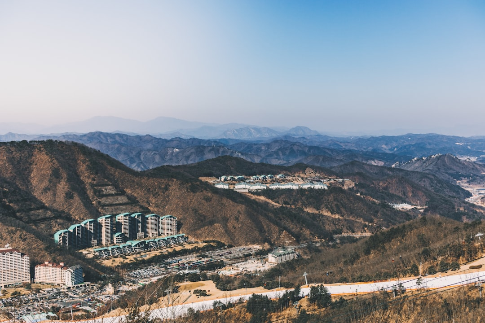

韓 반도체·AI·데이터센터 삼각축, 소재 병목 없이 작동하나

한국 정부는 2025년 반도체·AI·데이터센터를 '산업 대전환 3대 축'으로 공식화하고, K-반도체 메가특구 조성과 국가 AI 전략을 연계하는 로드맵을 발표했다. 산업은행은 국민성장펀드 운용사 18곳을 선정해 AI·반도체 분야에 총 3조 원 이상의 투자를 본격화할 계획이다.
그러나 이 3조 원 펀드의 투자 포트폴리오 구성을 보면 팹리스·시스템반도체 설계(40%), 파운드리 공정 개선(25%), AI 소프트웨어·플랫폼(20%) 위주로, 소재·장비·부품(소부장) 투자 비중은 15% 미만으로 추정된다. 2019년 일본 수출규제 이후 소부장 자립 예산이 연 1조 원 이상 편성된 것과 비교하면 상대적으로 축소된 수준이다.
데이터센터 확장에는 서버용 냉각재(불화 에테르 계열), 고전력 변환용 SiC 기판(탄화규소), UPS용 배터리 소재(리튬·코발트)가 필수적이다. SiC 기판의 경우 울프스피드(미국)·로옴(일본)이 글로벌 공급의 75%를 담당하며, 한국의 자체 생산 능력은 연간 수요의 10% 미만이다.
한경협은 2025년 'AI·반도체 성장판' 보고서에서 2030년까지 국내 반도체 산업 생산액 300조 원 달성을 목표로 제시했다. 이를 위해서는 연간 소재 조달 규모가 현재 약 40조 원에서 80~100조 원으로 확대되어야 하는데, 이 증분 물량의 조달 경로가 명확하지 않다.
반도체·AI·데이터센터 삼각축 전략은 '수요 측 설계'는 잘 되어 있지만 '공급 측 기반'이 취약하다. 데이터센터 1GW 증설에 필요한 SiC 기판, 냉각 소재, 고순도 구리·알루미늄 수량을 역산해보면, 현재 국내 조달 능력으로 커버 가능한 비율이 40~50% 수준에 불과하다. 나머지는 수입 의존이다.
산업은행 펀드가 소부장보다 설계·소프트웨어 쪽에 치우친 것은 '수익률' 중심의 펀드 논리가 반영된 결과다. 소재·장비는 회수 기간이 7~10년으로 길고, 기술 리스크도 크다. 이 시장 실패를 보완하려면 정책금융의 소부장 직접 투자 비중을 30% 이상으로 의무화하는 별도 가이드라인이 필요하다.
SiC 기판 국산화를 추진 중인 SKC(자회사 SK엔펄스)와 웨이브일렉트로닉스는 데이터센터·전기차 수요 확대로 수혜를 받는다. SKC는 2025년 SiC 기판 양산 시험을 진행 중이며, 2027년 연간 10만 장 생산 목표를 설정했다. 이 물량이 실현되면 국내 수요의 약 25~30%를 대체할 수 있다.
불화 에테르 계열 냉각재(이머전 쿨링용) 공급사인 3M(Novec 시리즈 단종 이후 대안 소재 공급사 부상)과 국내 솔루스첨단소재가 데이터센터 열관리 소재 시장에서 점유율 확대 기회를 갖는다.
SiC 기판 조달 경로를 울프스피드(미국)에 집중한 기업들은 울프스피드의 재무 불안정(2024년 구조조정, 부채 22억 달러)으로 공급 차질 리스크에 노출된다. 단일 공급사 의존 구조는 반드시 2차 소싱 체계로 전환해야 한다.
소부장 투자가 상대적으로 소홀한 AI 반도체 스타트업 생태계는 장기적으로 원가 경쟁력 훼손 위험이 있다. 팹리스 설계 역량은 있어도 핵심 소재를 조달하지 못하면 양산 단계에서 병목이 생긴다.
정부는 국민성장펀드 내 소부장 전용 트랜치(tranche)를 별도로 설계하고, 투자 비중을 현재 15% 미만에서 30% 이상으로 상향해야 한다. 소재 투자는 회수 기간이 길기 때문에 GP(운용사) 성과보수 기준을 5년이 아닌 10년 단위로 설정하는 구조 변경이 선행되어야 한다.
데이터센터 운영사(KT, SKT, 네이버클라우드 등)는 SiC 기판·냉각 소재 조달 계획을 인프라 투자 계획과 함께 3년 단위로 선행 수립해야 한다. 현재처럼 장비 발주 후 소재를 조달하는 순서는 공급망 병목을 반드시 만들게 되어 있다.
실제 조달 현장에서는 — 데이터센터 냉각 소재는 1~2년 전에 물량 예약을 해두지 않으면 프로젝트 완공 시점에 수급 차질로 인한 가동 지연이 발생한다. 국내 대형 데이터센터 프로젝트들이 2026~2027년에 집중되어 있어, 지금 2025년이 냉각 소재 선행 계약의 마지막 적기다.
이 포스팅은 쿠팡 파트너스 활동의 일환으로 수수료를 제공받습니다.